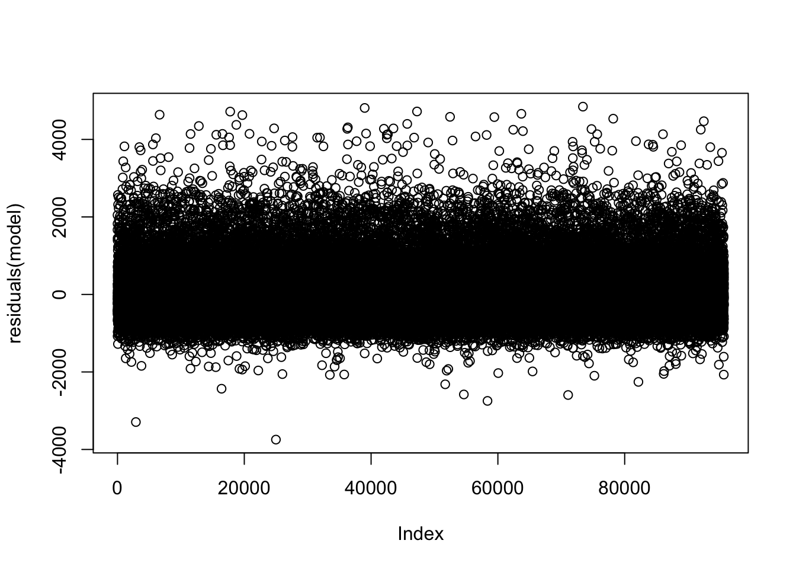
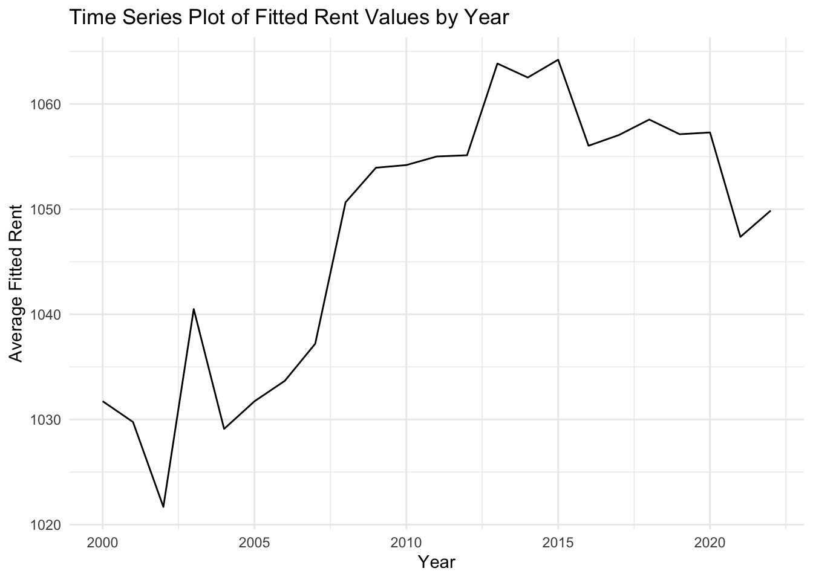

The following objects are masked from 'package:tidyr':
expand, pack, unpack
model <-lmer(RENTGRS ~ ROOMS + NFAMS + AGE + (1| REGION), data = data_twenty, REML =FALSE)summary(model)
Linear mixed model fit by maximum likelihood ['lmerMod']
Formula: RENTGRS ~ ROOMS + NFAMS + AGE + (1 | REGION)
Data: data_twenty
AIC BIC logLik deviance df.resid
1494416.6 1494473.4 -747202.3 1494404.6 95658
Scaled residuals:
Min 1Q Median 3Q Max
-6.2769 -0.6193 -0.1758 0.3995 8.1212
Random effects:
Groups Name Variance Std.Dev.
REGION (Intercept) 42539 206.3
Residual 356060 596.7
Number of obs: 95664, groups: REGION, 9
Fixed effects:
Estimate Std. Error t value
(Intercept) 653.0188 69.2216 9.434
ROOMS 81.0267 1.0454 77.507
NFAMS 89.4585 2.9375 30.453
AGE -1.9863 0.1092 -18.191
Correlation of Fixed Effects:
(Intr) ROOMS NFAMS
ROOMS -0.066
NFAMS -0.051 -0.143
AGE -0.078 0.044 0.158
plot(residuals(model))

data_twenty$fitted <-predict(model, re.form =NA)yearly_trends <- data_twenty %>%group_by(YEAR) %>%summarise(Average_Fitted =mean(fitted))ggplot(yearly_trends, aes(x = YEAR, y = Average_Fitted)) +geom_line() +labs(title ="Time Series Plot of Fitted Rent Values by Year",x ="Year",y ="Average Fitted Rent") +theme_minimal()

The linear mixed-effects model is used to understand how different factors (rooms, family size, and age) influence rent prices, with variations across different regions taken into account as random effects. The model’s summary would give an insight into which factors are statistically significant and their estimated effects on rent prices. Moreover, the residual plot, which shows the residuals on the y-axis against the index of observations on the x-axis. The residuals appear to be randomly scattered around the horizontal axis at zero, with no clear patterns or trends. This suggests that the model does not exhibit obvious systematic bias.However, there are some points that stand out from the cloud of points, indicating potential outliers or anomalies in the data.
The time series plot of the fitted rent values by year. This plot visualizes the average rent price predicted by the model across different years: The plot shows fluctuations in the average fitted rent values over time, with an overall increasing trend until around 2015, after which there is a sharp decrease. The rise until 2015 could indicate increasing rent prices over time due to various factors such as inflation, market demand, or changes in the number of rooms, family size, and the age of the buildings. The sharp decline after 2015 could be due to an economic event, policy change, or other external factors not captured by the model.